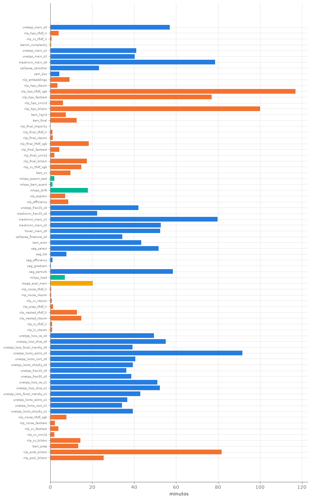

Reproducibilidad, autoría y uso de herramientas#
En este capítulo reunimos lo necesario para regenerar cada tabla y figura del libro: el comando único, el entorno, las semillas, el hardware, el tiempo de cómputo y la huella de carbono. Al final declaramos cómo usamos herramientas de inteligencia artificial y cómo verificamos su trabajo.
import platform
import re
import pandas as pd
import matplotlib.pyplot as plt
from IPython.display import Markdown, display
from project.book_utils import CAT, style
from project.config import RESULTS, ROOT
from project.persist import load_pickle
style()
pd.set_option("display.precision", 2)
md = lambda t: display(Markdown(t)) # noqa: E731
Comando único#
python -m venv .venv && .venv/Scripts/pip install -r requirements.lock && .venv/Scripts/pip install -e .
export KAGGLE_API_TOKEN=... # reglas aceptadas en las dos competencias
make reproduce # data → splits → queue → eval → analysis → track → book
Etapa |
Comando |
Qué produce |
|---|---|---|
Datos |
|
descarga de Kaggle y verificación SHA-256 ( |
Particiones |
|
caché de etiquetas y particiones; aborta si la partición reconstruida difiere de la guardada |
Entrenamiento |
|
todos los trabajos de |
Evaluación |
|
selección del posproceso en validación y evaluación única de test (segmentación) |
Análisis |
|
EDA, estadística, figuras e índice de pickles |
Seguimiento |
|
volcado de |
Libro |
|
notebooks generados desde |
Cada resultado se escribe en un pickle de results/ con escritura atómica (archivo temporal y renombrado), y los notebooks solo leen pickles: si falta uno, la celda indica el comando que lo genera. El índice completo de pickles está en results/INDICE_PICKLES.md. dvc repro ejecuta las mismas etapas y solo rehace las que cambiaron.
Entorno y hardware#
env = {"Sistema operativo": f"{platform.system()} {platform.release()}", "Python": platform.python_version(),
"Procesador": platform.processor() or "—"}
try:
import torch
env["PyTorch"] = torch.__version__
env["CUDA"] = torch.version.cuda or "—"
if torch.cuda.is_available():
p = torch.cuda.get_device_properties(0)
env["GPU"] = f"{p.name}, {p.total_memory / 1e9:.1f} GB"
except Exception: # noqa: BLE001
pass
try:
import psutil
env["RAM"] = f"{psutil.virtual_memory().total / 1e9:.0f} GB"
env["Núcleos (físicos / lógicos)"] = f"{psutil.cpu_count(logical=False)} / {psutil.cpu_count()}"
except Exception: # noqa: BLE001
pass
lock = (ROOT / "requirements.lock").read_text(encoding="utf-8").splitlines()
key = ["keras", "torch", "torchvision", "transformers", "scikit-learn", "xgboost", "fasttext", "gensim", "optuna", "cellpose",
"segment-anything", "onnx", "onnxruntime", "fastapi", "mlflow", "dvc", "codecarbon", "statsmodels", "scipy", "numpy", "pandas"]
ver = {}
for line in lock:
m_ = re.match(r"^([A-Za-z0-9_.\-]+)==(.+)$", line.strip())
if m_ and m_.group(1).lower() in key:
ver[m_.group(1).lower()] = m_.group(2)
display(pd.DataFrame({"valor": env}))
display(pd.DataFrame({"versión": ver}).sort_index())
md(f"`requirements.lock` fija las {sum(1 for x in lock if '==' in x)} dependencias del entorno de entrenamiento y `requirements-serve.lock` las de la imagen de servicio.")
| valor | |
|---|---|
| Sistema operativo | Windows 11 |
| Python | 3.12.10 |
| Procesador | AMD64 Family 25 Model 117 Stepping 2, Authenti... |
| PyTorch | 2.15.0+cu132 |
| CUDA | 13.2 |
| RAM | 34 GB |
| Núcleos (físicos / lógicos) | 8 / 16 |
| versión | |
|---|---|
| cellpose | 3.1.1.3 |
| codecarbon | 3.3.3 |
| dvc | 3.67.1 |
| fastapi | 0.165.0 |
| gensim | 4.4.0 |
| keras | 3.15.1 |
| numpy | 2.0.2 |
| onnx | 1.23.2 |
| onnxruntime | 1.32.0 |
| optuna | 5.1.0 |
| pandas | 3.1.1 |
| scikit-learn | 1.9.1 |
| scipy | 1.18.1 |
| segment-anything | 1.0 |
| statsmodels | 0.15.0 |
| torch | 2.15.0+cu132 |
| torchvision | 0.29.2+cu132 |
| transformers | 5.24.1 |
| xgboost | 3.4.1 |
requirements.lock fija las 323 dependencias del entorno de entrenamiento y requirements-serve.lock las de la imagen de servicio.
Semillas y determinismo#
Elemento |
Semilla |
|---|---|
Partición de Sartorius ( |
42 |
Partición de Jarvis ( |
42 |
MinHash de casi duplicados |
1 |
Modelos de segmentación |
0, 1, 2 (ablaciones: las que entraron en el presupuesto, ver capítulo Ablaciones, robustez, calibración y eficiencia en segmentación) |
Modelos de texto |
0, 1, 2, 3, 4 (búsqueda de hiperparámetros: semilla 0) |
Muestras aleatorias de figuras, conjuntos dorados y ventanas de deriva |
2026 o 0, fijadas en el código |
set_global_seed fija Python, NumPy y PyTorch. No activamos los algoritmos deterministas de cuDNN porque ralentizan las convoluciones; la variación residual entre ejecuciones con la misma semilla queda dentro de la variación entre semillas, que reportamos siempre. La prueba test_seed_determinism verifica que la misma semilla reproduce las mismas muestras aleatorias.
Tiempo de cómputo#
st = load_pickle(RESULTS / "queue" / "state.pkl")
runs = pd.DataFrame(st["runs"])
runs = runs[runs.ok]
def block(j: str) -> str:
if j.startswith(("unetpp", "maskrcnn", "hover", "cellpose", "sam", "seg_", "otsu")):
return "segmentación"
if j.startswith(("nlp", "bert")):
return "texto"
if j.startswith("mlops"):
return "MLOps"
return "otros"
runs["bloque"] = runs.job.map(block)
tb = runs.groupby("bloque").minutes.agg(["count", "sum"]).rename(columns={"count": "trabajos", "sum": "minutos"})
tb["horas"] = tb.minutos / 60
display(tb.round({"minutos": 1, "horas": 2}))
md(f"Tiempo total de la cola de entrenamiento: {runs.minutes.sum() / 60:.1f} h en {len(runs)} trabajos, del "
f"{runs.end.min()[:16]} al {runs.end.max()[:16]}. Los trabajos fallidos y reintentados están en `results/queue/queue.log`.")
fig, ax = plt.subplots(figsize=(9, 0.18 * len(runs) + 1))
ax.barh(runs.job, runs.minutes, color=[CAT[["segmentación", "texto", "MLOps", "otros"].index(b)] for b in runs.bloque])
ax.invert_yaxis(); ax.set(xlabel="minutos"); ax.tick_params(axis="y", labelsize=6)
plt.show()
| trabajos | minutos | horas | |
|---|---|---|---|
| bloque | |||
| MLOps | 4 | 27.6 | 0.46 |
| otros | 2 | 20.6 | 0.34 |
| segmentación | 32 | 1336.5 | 22.27 |
| texto | 37 | 602.6 | 10.04 |
Tiempo total de la cola de entrenamiento: 33.1 h en 75 trabajos, del 2026-11-25 08:15 al 2026-11-26 16:26. Los trabajos fallidos y reintentados están en results/queue/queue.log.

Huella de carbono#
El monitor de codecarbon [CodeCarbon contributors, 2024] midió la energía del equipo completo (CPU, GPU y RAM) en ventanas consecutivas durante la primera parte del proyecto, con el factor de emisión de Colombia. Se detuvo cuando el sistema lo cerró por falta de memoria al iniciar Mask R-CNN. Para el resto del tiempo de cómputo estimamos la energía como potencia media medida × duración de los trabajos, una estimación de orden de magnitud.
cols = ["start", "end", "seconds", "cpu_kwh", "gpu_kwh", "ram_kwh", "total_kwh", "kg_co2eq", "cpu_w", "gpu_w"]
ew = pd.read_csv(RESULTS / "mlops" / "energy_windows.csv", names=cols)
ew = ew[pd.to_numeric(ew.seconds, errors="coerce").notna()].astype({c: float for c in cols[2:]})
measured_h = ew.seconds.sum() / 3600
kw = ew.total_kwh.sum() / measured_h
factor = ew.kg_co2eq.sum() / ew.total_kwh.sum()
total_h = runs.minutes.sum() / 60
unmeasured_h = max(total_h - measured_h, 0)
tab = pd.DataFrame([
dict(periodo="medido por codecarbon", horas=measured_h, kWh=ew.total_kwh.sum(), **{"kg CO₂eq": ew.kg_co2eq.sum()}),
dict(periodo="estimado (potencia media × duración)", horas=unmeasured_h, kWh=kw * unmeasured_h, **{"kg CO₂eq": kw * unmeasured_h * factor})])
tab.loc[len(tab)] = dict(periodo="total", horas=tab.horas.sum(), kWh=tab.kWh.sum(), **{"kg CO₂eq": tab["kg CO₂eq"].sum()})
display(tab.style.hide(axis="index").format(precision=3))
md(f"Potencia media medida: {1e3 * kw:.0f} W. Factor de emisión: {1e3 * factor:.0f} g CO₂eq/kWh. La estimación no incluye el cómputo fuera "
f"de la cola (análisis, notebooks, pruebas) ni la fabricación del equipo.")
| periodo | horas | kWh | kg CO₂eq |
|---|---|---|---|
| medido por codecarbon | 1.522 | 0.132 | 0.025 |
| estimado (potencia media × duración) | 31.599 | 2.747 | 0.513 |
| total | 33.122 | 2.879 | 0.538 |
Potencia media medida: 87 W. Factor de emisión: 187 g CO₂eq/kWh. La estimación no incluye el cómputo fuera de la cola (análisis, notebooks, pruebas) ni la fabricación del equipo.
Desviaciones del protocolo#
Todas las desviaciones del pre-registro (results/common/preregistro_2026-11-25.md, etiqueta git prereg) están en la tabla del capítulo Declaración a priori y, con fecha, hora y motivo, en la bitácora del proyecto (reports/bitacora.md).
Autoría y uso de herramientas de inteligencia artificial#
Usamos Claude Code (Anthropic), un asistente de programación basado en un modelo de lenguaje, durante todo el proyecto.
Qué hizo el asistente. A partir del enunciado y de nuestros documentos de instrucciones, escribió la mayor parte del código del paquete src/project/, los scripts, la API, las pruebas, la configuración de CI y el Makefile; redactó el pre-registro a partir de las hipótesis del enunciado antes de entrenar; ejecutó la cola de entrenamiento; registró sus decisiones operativas en la bitácora, y escribió los borradores de los capítulos.
Qué hicimos los autores. Fijamos el alcance, las restricciones y las reglas de trabajo en documentos de instrucciones (qué priorizar, qué no hacer, plazos y estilo); preparamos el entorno y los datos; resolvimos a mano los ejercicios teóricos; anotamos a mano los errores de clasificación para la medida de concordancia, y revisamos cada capítulo y cada cifra antes de la entrega.
Cómo verificamos el trabajo.
Ninguna cifra del libro está escrita a mano: cada número sale de un pickle generado por código versionado, y los notebooks se ejecutan de arriba abajo.
Las métricas y las pruebas estadísticas tienen pruebas unitarias con casos conocidos (RLE, Dice, IoU, AP, HD95, taxonomía de errores, Holm, escalado de temperatura, cobertura conforme, PSI) y pruebas sintéticas en el capítulo Fundamentos teóricos.
La partición se verifica sin fuga entre grupos, y el pipeline aborta si la partición reconstruida difiere de la guardada.
Las afirmaciones del texto que dependen de resultados se escriben como texto condicional calculado desde los pickles; las afirmaciones fijas las contrastamos con las salidas ejecutadas antes de compilar.
Las referencias provienen de
references.bib; verificamos que cada cita del texto exista en él.
Respondemos íntegramente por la corrección de todo lo entregado.